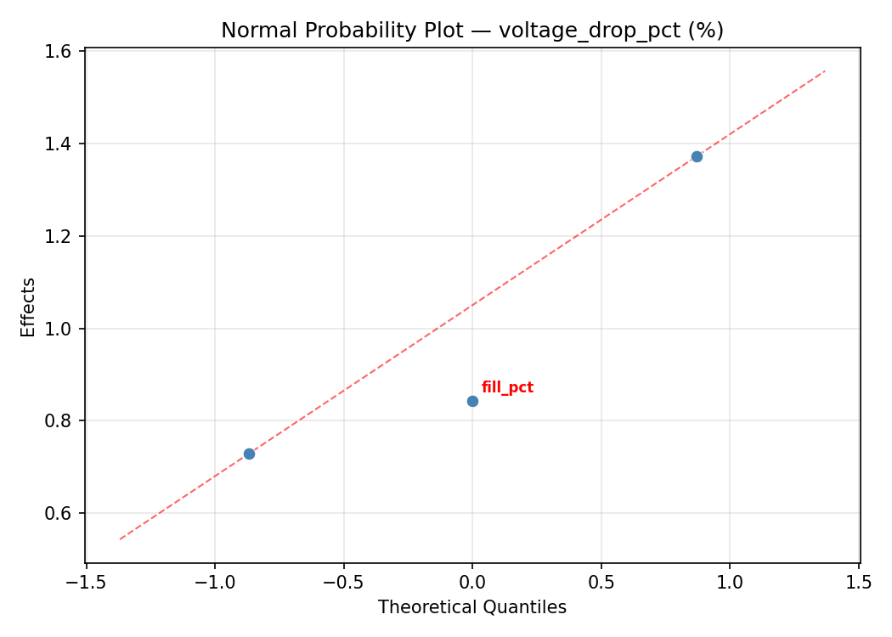
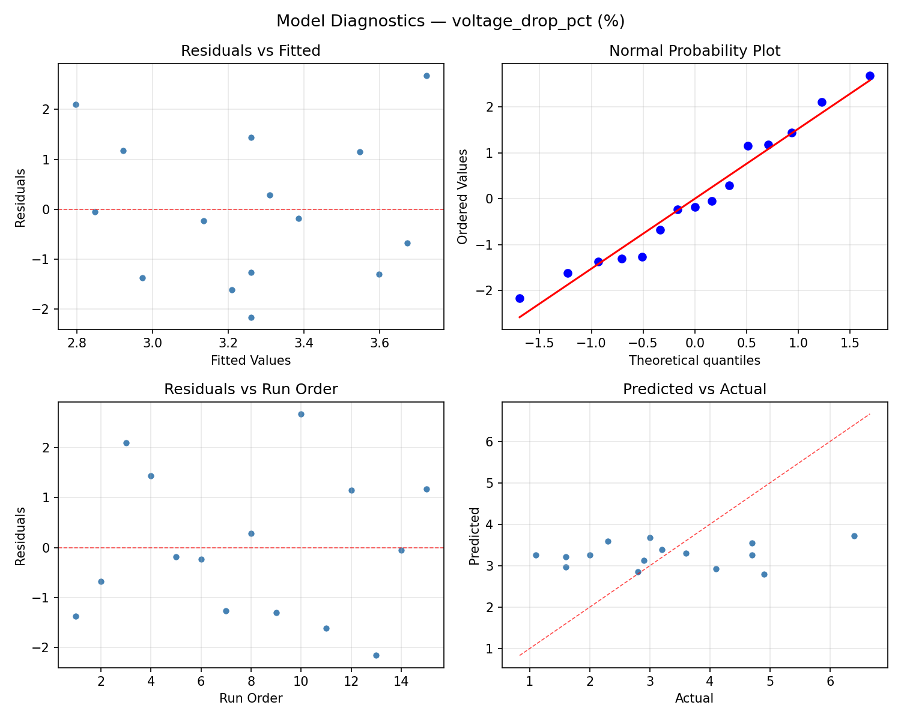
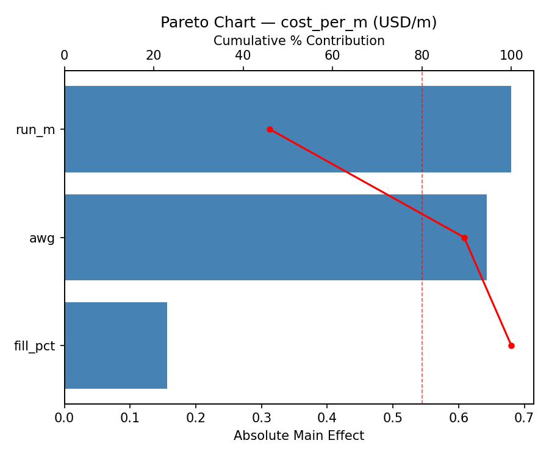
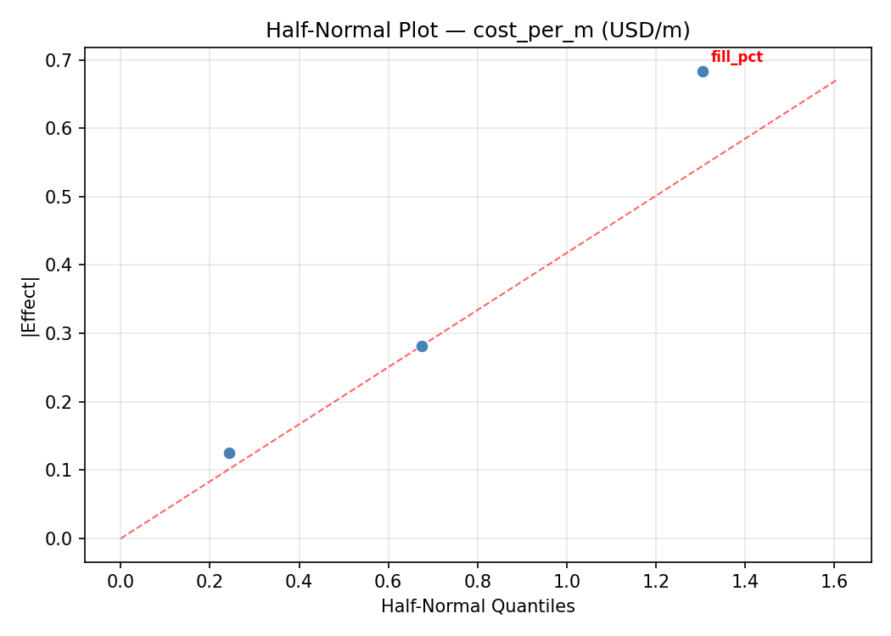
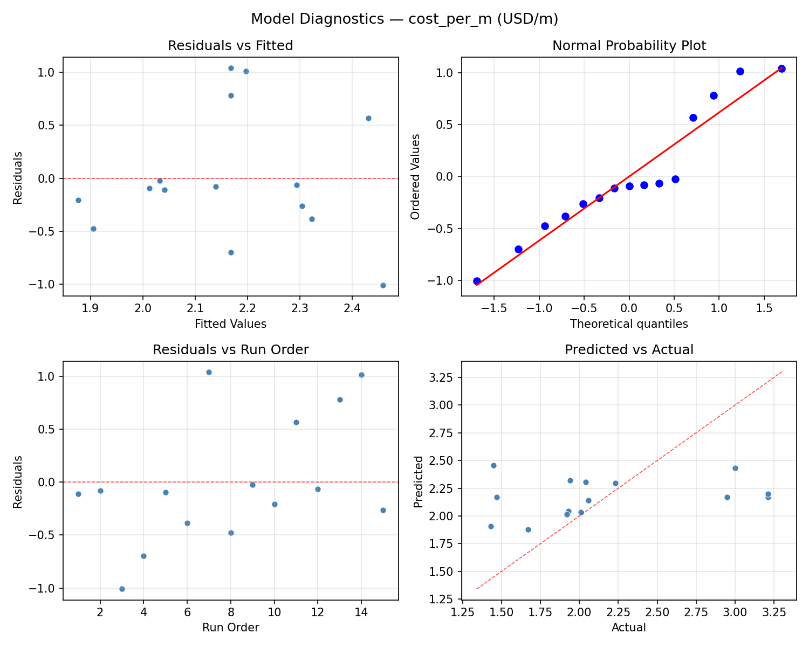
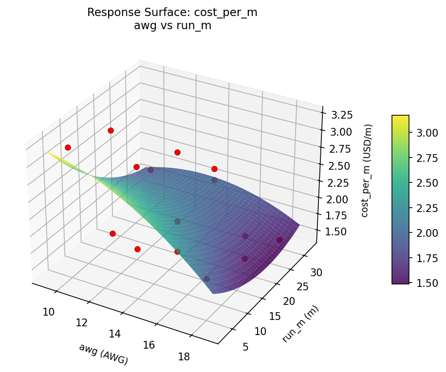
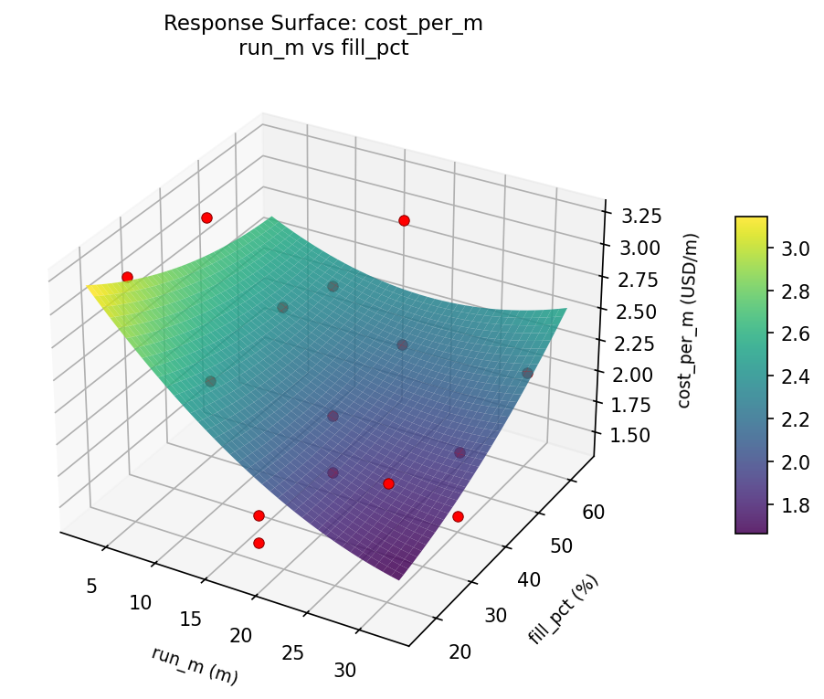
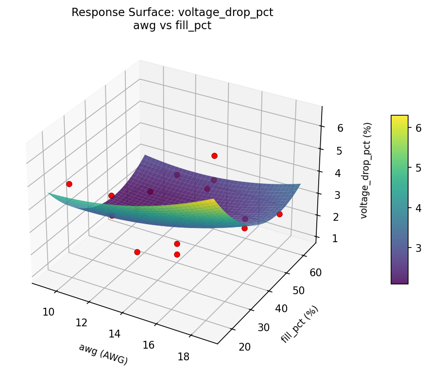
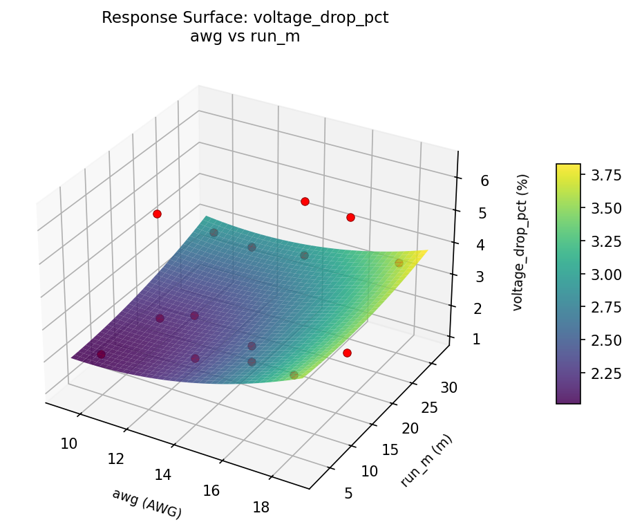

Summary
This experiment investigates wire gauge & run length. Box-Behnken design to minimize voltage drop and maximize cost efficiency by tuning wire gauge, run length, and conduit fill ratio.
The design varies 3 factors: awg (AWG), ranging from 10 to 18, run m (m), ranging from 5 to 30, and fill pct (%), ranging from 20 to 60. The goal is to optimize 2 responses: voltage drop pct (%) (minimize) and cost per m (USD/m) (minimize). Fixed conditions held constant across all runs include circuit = 20A_120V, conductor = copper.
A Box-Behnken design was chosen because it efficiently fits quadratic models with 3 continuous factors while avoiding extreme corner combinations — requiring only 15 runs instead of the 8 needed for a full factorial at two levels.
Quadratic response surface models were fitted to capture potential curvature and factor interactions. The RSM contour plots below visualize how pairs of factors jointly affect each response.
Key Findings
For voltage drop pct, the most influential factors were fill pct (75.4%), awg (15.7%), run m (9.0%). The best observed value was 1.1 (at awg = 10, run m = 17.5, fill pct = 60).
For cost per m, the most influential factors were run m (57.9%), fill pct (34.7%), awg (7.4%). The best observed value was 1.43 (at awg = 14, run m = 17.5, fill pct = 40).
Recommended Next Steps
- Run confirmation experiments at the predicted optimal settings to validate the model.
- Consider whether any fixed factors should be varied in a future study.
Experimental Setup
Factors
| Factor | Low | High | Unit |
|---|
awg | 10 | 18 | AWG |
run_m | 5 | 30 | m |
fill_pct | 20 | 60 | % |
Fixed: circuit = 20A_120V, conductor = copper
Responses
| Response | Direction | Unit |
|---|
voltage_drop_pct | ↓ minimize | % |
cost_per_m | ↓ minimize | USD/m |
Configuration
{
"metadata": {
"name": "Wire Gauge & Run Length",
"description": "Box-Behnken design to minimize voltage drop and maximize cost efficiency by tuning wire gauge, run length, and conduit fill ratio"
},
"factors": [
{
"name": "awg",
"levels": [
"10",
"18"
],
"type": "continuous",
"unit": "AWG"
},
{
"name": "run_m",
"levels": [
"5",
"30"
],
"type": "continuous",
"unit": "m"
},
{
"name": "fill_pct",
"levels": [
"20",
"60"
],
"type": "continuous",
"unit": "%"
}
],
"fixed_factors": {
"circuit": "20A_120V",
"conductor": "copper"
},
"responses": [
{
"name": "voltage_drop_pct",
"optimize": "minimize",
"unit": "%"
},
{
"name": "cost_per_m",
"optimize": "minimize",
"unit": "USD/m"
}
],
"settings": {
"operation": "box_behnken",
"test_script": "use_cases/277_wire_gauge_selection/sim.sh"
}
}
Experimental Matrix
The Box-Behnken Design produces 15 runs. Each row is one experiment with specific factor settings.
| Run | awg | run_m | fill_pct |
|---|
| 1 | 14 | 5 | 20 |
| 2 | 14 | 17.5 | 40 |
| 3 | 18 | 17.5 | 60 |
| 4 | 18 | 17.5 | 20 |
| 5 | 14 | 17.5 | 40 |
| 6 | 14 | 17.5 | 40 |
| 7 | 10 | 17.5 | 60 |
| 8 | 18 | 5 | 40 |
| 9 | 14 | 5 | 60 |
| 10 | 18 | 30 | 40 |
| 11 | 10 | 17.5 | 20 |
| 12 | 14 | 30 | 60 |
| 13 | 10 | 5 | 40 |
| 14 | 10 | 30 | 40 |
| 15 | 14 | 30 | 20 |
Step-by-Step Workflow
1
Preview the design
$ doe info --config use_cases/277_wire_gauge_selection/config.json
2
Generate the runner script
$ doe generate --config use_cases/277_wire_gauge_selection/config.json \
--output use_cases/277_wire_gauge_selection/results/run.sh --seed 42
3
Execute the experiments
$ bash use_cases/277_wire_gauge_selection/results/run.sh
4
Analyze results
$ doe analyze --config use_cases/277_wire_gauge_selection/config.json
5
Get optimization recommendations
$ doe optimize --config use_cases/277_wire_gauge_selection/config.json
6
Multi-objective optimization
With 2 competing responses, use --multi to find the best compromise via Derringer–Suich desirability.
$ doe optimize --config use_cases/277_wire_gauge_selection/config.json --multi
7
Generate the HTML report
$ doe report --config use_cases/277_wire_gauge_selection/config.json \
--output use_cases/277_wire_gauge_selection/results/report.html
Features Exercised
| Feature | Value |
|---|
| Design type | box_behnken |
| Factor types | continuous (all 3) |
| Arg style | double-dash |
| Responses | 2 (voltage_drop_pct ↓, cost_per_m ↓) |
| Total runs | 15 |
Analysis Results
Generated from actual experiment runs using the DOE Helper Tool.
Response: voltage_drop_pct
Top factors: fill_pct (75.4%), awg (15.7%), run_m (9.0%).
ANOVA
| Source | DF | SS | MS | F | p-value |
|---|
| Source | DF | SS | MS | F | p-value |
| awg | 2 | 0.4589 | 0.2294 | 0.062 | 0.9406 |
| run_m | 2 | 0.1342 | 0.0671 | 0.018 | 0.9822 |
| fill_pct | 2 | 8.0799 | 4.0400 | 1.086 | 0.3826 |
| Lack | of | Fit | 6 | 14.5030 | 2.4172 |
| Pure | Error | 2 | 7.4400 | | |
| Error | 8 | 21.9430 | 3.7200 | | |
| Total | 14 | 30.6160 | 2.1869 | | |
Pareto Chart

Main Effects Plot

Normal Probability Plot of Effects

Half-Normal Plot of Effects

Model Diagnostics

Response: cost_per_m
Top factors: run_m (57.9%), fill_pct (34.7%), awg (7.4%).
ANOVA
| Source | DF | SS | MS | F | p-value |
|---|
| Source | DF | SS | MS | F | p-value |
| awg | 2 | 0.0159 | 0.0079 | 0.014 | 0.9859 |
| run_m | 2 | 1.1073 | 0.5536 | 0.994 | 0.4117 |
| fill_pct | 2 | 0.3646 | 0.1823 | 0.327 | 0.7302 |
| Lack | of | Fit | 6 | 2.8954 | 0.4826 |
| Pure | Error | 2 | 1.1145 | | |
| Error | 8 | 4.0099 | 0.5572 | | |
| Total | 14 | 5.4976 | 0.3927 | | |
Pareto Chart

Main Effects Plot

Normal Probability Plot of Effects

Half-Normal Plot of Effects

Model Diagnostics

Response Surface Plots
3D surfaces fitted with quadratic RSM. Red dots are observed data points.
cost per m awg vs fill pct

cost per m awg vs run m

cost per m run m vs fill pct

voltage drop pct awg vs fill pct

voltage drop pct awg vs run m

voltage drop pct run m vs fill pct

Multi-Objective Optimization
When responses compete, Derringer–Suich desirability finds the best compromise.
Each response is scaled to a 0–1 desirability, then combined via a weighted geometric mean.
Overall Desirability
D = 0.8426
Per-Response Desirability
| Response | Weight | Desirability | Predicted | Dir |
|---|
voltage_drop_pct |
1.5 |
|
1.61 0.8674 1.61 % |
↓ |
cost_per_m |
1.0 |
|
1.72 0.8069 1.72 USD/m |
↓ |
Recommended Settings
| Factor | Value |
|---|
awg | 10 AWG |
run_m | 5 m |
fill_pct | 60 % |
Source: from RSM model prediction
Trade-off Summary
Sacrifice = how much worse than single-objective best.
| Response | Predicted | Best Observed | Sacrifice |
|---|
cost_per_m | 1.72 | 1.43 | +0.29 |
Top 3 Runs by Desirability
| Run | D | Factor Settings |
|---|
| #9 | 0.7112 | awg=18, run_m=17.5, fill_pct=60 |
| #8 | 0.6674 | awg=10, run_m=5, fill_pct=40 |
Model Quality
| Response | R² | Type |
|---|
cost_per_m | 0.6350 | quadratic |
Full Multi-Objective Output
============================================================
MULTI-OBJECTIVE OPTIMIZATION
Method: Derringer-Suich Desirability Function
============================================================
Overall desirability: D = 0.8426
Response Weight Desirability Predicted Direction
---------------------------------------------------------------------
voltage_drop_pct 1.5 0.8674 1.61 % ↓
cost_per_m 1.0 0.8069 1.72 USD/m ↓
Recommended settings:
awg = 10 AWG
run_m = 5 m
fill_pct = 60 %
(from RSM model prediction)
Trade-off summary:
voltage_drop_pct: 1.61 (best observed: 1.10, sacrifice: +0.51)
cost_per_m: 1.72 (best observed: 1.43, sacrifice: +0.29)
Model quality:
voltage_drop_pct: R² = 0.6757 (quadratic)
cost_per_m: R² = 0.6350 (quadratic)
Top 3 observed runs by overall desirability:
1. Run #1 (D=0.7965): awg=18, run_m=17.5, fill_pct=20
2. Run #9 (D=0.7112): awg=18, run_m=17.5, fill_pct=60
3. Run #8 (D=0.6674): awg=10, run_m=5, fill_pct=40
Full Analysis Output
=== Main Effects: voltage_drop_pct ===
Factor Effect Std Error % Contribution
--------------------------------------------------------------
fill_pct 1.9250 0.3818 75.4%
awg 0.4000 0.3818 15.7%
run_m 0.2286 0.3818 9.0%
=== ANOVA Table: voltage_drop_pct ===
Source DF SS MS F p-value
-----------------------------------------------------------------------------
awg 2 0.4589 0.2294 0.062 0.9406
run_m 2 0.1342 0.0671 0.018 0.9822
fill_pct 2 8.0799 4.0400 1.086 0.3826
Lack of Fit 6 14.5030 2.4172 0.650 0.7113
Pure Error 2 7.4400 3.7200
Error 8 21.9430 3.7200
Total 14 30.6160 2.1869
=== Summary Statistics: voltage_drop_pct ===
awg:
Level N Mean Std Min Max
------------------------------------------------------------
10 4 3.5500 2.0290 1.6000 6.4000
14 7 3.1571 1.4808 1.1000 4.9000
18 4 3.1500 1.2450 2.0000 4.7000
run_m:
Level N Mean Std Min Max
------------------------------------------------------------
17.5 7 3.1714 1.9371 1.1000 6.4000
30 4 3.2750 1.3696 1.6000 4.9000
5 4 3.4000 0.8832 2.8000 4.7000
fill_pct:
Level N Mean Std Min Max
------------------------------------------------------------
20 4 4.0250 2.0006 2.0000 6.4000
40 7 3.4857 1.2482 1.1000 4.7000
60 4 2.1000 0.6272 1.6000 2.9000
=== Main Effects: cost_per_m ===
Factor Effect Std Error % Contribution
--------------------------------------------------------------
run_m 0.6182 0.1618 57.9%
fill_pct 0.3707 0.1618 34.7%
awg 0.0786 0.1618 7.4%
=== ANOVA Table: cost_per_m ===
Source DF SS MS F p-value
-----------------------------------------------------------------------------
awg 2 0.0159 0.0079 0.014 0.9859
run_m 2 1.1073 0.5536 0.994 0.4117
fill_pct 2 0.3646 0.1823 0.327 0.7302
Lack of Fit 6 2.8954 0.4826 0.866 0.6235
Pure Error 2 1.1145 0.5572
Error 8 4.0099 0.5572
Total 14 5.4976 0.3927
=== Summary Statistics: cost_per_m ===
awg:
Level N Mean Std Min Max
------------------------------------------------------------
10 4 2.1625 0.5812 1.6700 3.0000
14 7 2.1414 0.6856 1.4500 3.2100
18 4 2.2200 0.7413 1.4300 3.2100
run_m:
Level N Mean Std Min Max
------------------------------------------------------------
17.5 7 2.3357 0.7035 1.4700 3.2100
30 4 1.7175 0.3249 1.4300 2.0600
5 4 2.3250 0.6068 1.9200 3.2100
fill_pct:
Level N Mean Std Min Max
------------------------------------------------------------
20 4 2.3850 0.9569 1.4500 3.2100
40 7 2.0143 0.5118 1.4300 2.9500
60 4 2.2200 0.5212 1.9300 3.0000
Optimization Recommendations
=== Optimization: voltage_drop_pct ===
Direction: minimize
Best observed run: #13
awg = 10
run_m = 17.5
fill_pct = 60
Value: 1.1
RSM Model (linear, R² = 0.1637, Adj R² = -0.0644):
Coefficients:
intercept +3.2600
awg -0.6000
run_m -0.5125
fill_pct -0.0625
RSM Model (quadratic, R² = 0.5993, Adj R² = -0.1221):
Coefficients:
intercept +4.1333
awg -0.6000
run_m -0.5125
fill_pct -0.0625
awg*run_m +0.4500
awg*fill_pct +1.4000
run_m*fill_pct -0.4250
awg^2 -0.2292
run_m^2 -0.4542
fill_pct^2 -0.9542
Curvature analysis:
fill_pct coef=-0.9542 concave (has a maximum)
run_m coef=-0.4542 concave (has a maximum)
awg coef=-0.2292 concave (has a maximum)
Notable interactions:
awg*fill_pct coef=+1.4000 (synergistic)
awg*run_m coef=+0.4500 (synergistic)
run_m*fill_pct coef=-0.4250 (antagonistic)
Predicted optimum (from linear model, at observed points):
awg = 10
run_m = 5
fill_pct = 40
Predicted value: 4.3725
Surface optimum (via L-BFGS-B, linear model):
awg = 18
run_m = 30
fill_pct = 60
Predicted value: 2.0850
Model quality: Weak fit — consider adding center points or using a different design.
Factor importance:
1. awg (effect: 1.2, contribution: 37.6%)
2. run_m (effect: 1.0, contribution: 32.1%)
3. fill_pct (effect: 1.0, contribution: 30.3%)
=== Optimization: cost_per_m ===
Direction: minimize
Best observed run: #8
awg = 14
run_m = 17.5
fill_pct = 40
Value: 1.43
RSM Model (linear, R² = 0.0147, Adj R² = -0.2541):
Coefficients:
intercept +2.1680
awg -0.0250
run_m +0.0675
fill_pct -0.0700
RSM Model (quadratic, R² = 0.6939, Adj R² = 0.1430):
Coefficients:
intercept +1.6467
awg -0.0250
run_m +0.0675
fill_pct -0.0700
awg*run_m -0.4350
awg*fill_pct -0.6200
run_m*fill_pct +0.2250
awg^2 +0.3192
run_m^2 +0.1642
fill_pct^2 +0.4942
Curvature analysis:
fill_pct coef=+0.4942 convex (has a minimum)
awg coef=+0.3192 convex (has a minimum)
run_m coef=+0.1642 convex (has a minimum)
Notable interactions:
awg*fill_pct coef=-0.6200 (antagonistic)
awg*run_m coef=-0.4350 (antagonistic)
Predicted optimum (from quadratic model, at observed points):
awg = 18
run_m = 17.5
fill_pct = 20
Predicted value: 3.1250
Surface optimum (via L-BFGS-B, quadratic model):
awg = 10.3922
run_m = 5
fill_pct = 34.6535
Predicted value: 1.5979
Model quality: Moderate fit — use predictions directionally, not precisely.
Factor importance:
1. fill_pct (effect: 0.5, contribution: 52.9%)
2. awg (effect: 0.3, contribution: 29.7%)
3. run_m (effect: 0.2, contribution: 17.4%)